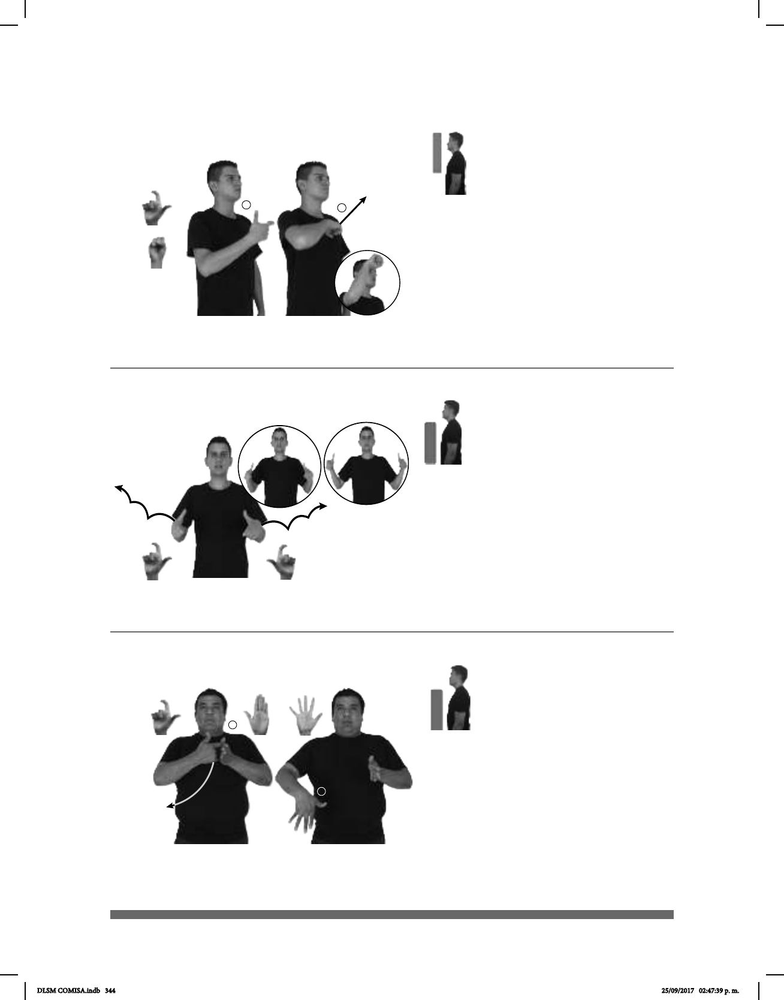

344
1
2
Seña: SS
L.10
Palmas hacia el
centro.
A la altura del pecho, del
centro a los lados.
Las manos se abren
hacia los lados siguiendo una
trayectoria de saltos.
Boca
semiabierta.
v. tr. Hacer que la
cantidad, el tamaño o la intensidad
de algo sea mayor o más grande.
Seña: SB
MD seña que pasa
de L.10 a 5.1, MB B-P.2.
MD palma hacia
adentro. MB palma hacia la dere-
cha.
MD de MB a la cadera,
MB a la altura del pecho.
MD se mueve
formando un arco mientras los
dedos se extienden.
adj. Que cuesta poco
dinero, que es de bajo precio.
(L-11)
(L-10)
(L-12)
PRECIO GASOLINA AUMENTAR
El precio de la gasolina ha aumentado.
ÚLTIMO AÑO-PASADO PERSONA
área
MUJER AUMENTAR
La población femenina aumentó en los últimos años.
ESTE JUGUETE BARATO
Este juguete está barato.
Seña: SM
Seña que pasa de L.10 a S.1
La palma inicia hacia adentro
y termina hacia afuera.
La mano inicia sobre el pecho y
termina a la altura de la cabeza.
Recto mientras el antebrazo
gira y cambia la orientación de la mano,
pasa de mostrar el dorso a mostrar la palma.
Boca abierta.
v. tr. Hacer que la cantidad, el
tamaño o la intensidad de algo sea mayor o
más grande.
DLSM COMISA.indb 344 25/09/2017 02:47:39 p. m.